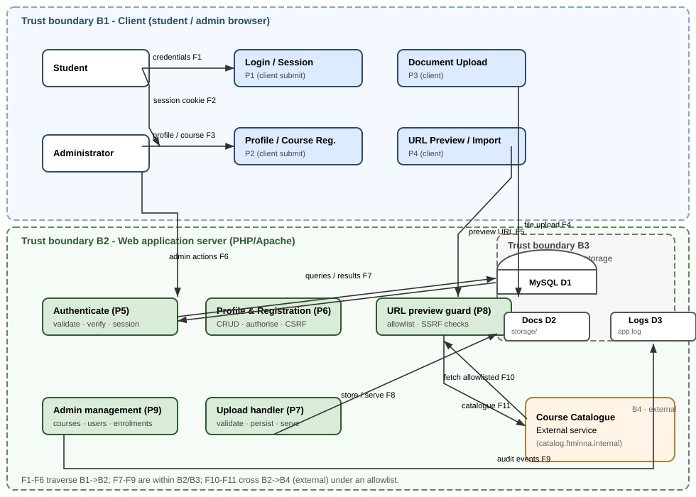

This report documents a full security assessment and hardening exercise on a student registration web application. It (a) produces a threat model using STRIDE and a risk assessment for the application, (b) hardens the authentication subsystem and removes SQL injection, and (c) applies and tests web application defences covering OWASP Top-10 classes including XSS, CSRF, SSRF, security misconfiguration, brute force and unsafe file upload. The exercise is executed entirely in an authorised local laboratory using Docker and fictitious data, and produces scripted, repeatable evidence of every control.
| Component | Value |
|---|---|
| Application (hardened) | PHP 8.3 (Apache), port 8085 |
| Application (starter / vulnerable) | Same stack, port 8086 — "before" baseline |
| Database | MySQL 8.4, two schemas: student_reg (hardened) and student_reg_vuln (starter) |
| Orchestration | Docker Compose (services: db, app, vulnerable, preview, cli) |
| Preview service | Internal course-catalogue host catalog.ftminna.internal (allowlisted SSRF target) |
| Test tooling | Bash + curl test suites driven by make tests |
Passwords are not echoed and no secrets are printed by any test. The admin password is generated randomly at seed time and stored only in db/seed-output/ADMIN_PASSWORD.txt (gitignored).
The assessment follows a threat-modelling-first approach: (1) map the system with a data-flow diagram and trust boundaries; (2) apply STRIDE to each data flow and store; (3) score likelihood and impact to produce a risk register; (4) remediate the highest-risk findings in the hardened build; and (5) verify each control with an automated test that produces evidence files. Controls and scoring are referenced to OWASP ASVS and CWE identifiers (Appendix B).

Trust boundaries: B1 client browser (student/admin), B2 web application server, B3 internal database/storage, B4 the external catalogue service reachable only through the SSRF guard. Flows F1-F6 cross the client boundary; F7-F9 are server-internal; F10-F11 cross to B4 under the destination allowlist.
The complete worksheet is in docs/STRIDE.md. A summary of the eight identified threats follows. Likelihood (L) and Impact (I) are scored 1-5; Risk = L × I.
| # | STRIDE | Threat | L | I | Risk |
|---|---|---|---|---|---|
| T1 | Spoofing | Login bypass via SQL injection and session fixation/theft | 4 | 5 | 20 |
| T2 | Tampering | SQL injection through concatenated profile/course queries | 4 | 5 | 20 |
| T3 | Information Disclosure | Verbose errors, plaintext passwords, stored XSS, default admin | 4 | 4 | 16 |
| T4 | Elevation of Privilege | Missing role checks, unsafe upload, CSRF admin actions | 3 | 5 | 15 |
| T5 | Repudiation | No audit trail for registrations / admin actions | 4 | 3 | 12 |
| T6 | Denial of Service | Brute force, upload disk exhaustion, SSRF amplification | 4 | 3 | 12 |
| T7 | Spoofing/Tampering | CSRF on state-changing forms | 3 | 4 | 12 |
| T8 | Information Disclosure | SSRF via URL preview to internal/metadata endpoints | 3 | 4 | 12 |
The full register is in docs/risk-register.md. All eight critical/high risks are mitigated in the hardened build and closed by automated evidence (Section 5). Two low/medium risks are explicitly accepted for the authorised local lab: (a) session-cookie sniffing on plain-HTTP localhost, and (b) non-WORM local audit logs. Both carry an acceptance condition — TLS and centralised log shipping — that must be met before any production use.
The starter build concatenates raw user input directly into SQL on every query. The login does so with email and password, trusts the first row of the result set, and compares the password against a plaintext column:
// vulnerable/public/login.php (starter)
$sql = "SELECT * FROM users WHERE email = '$email' AND password_hash = '$pass'";
$result = mysqli_query($conn, $sql);
if ($result && ($row = mysqli_fetch_assoc($result))) { // trusts FIRST row
$_SESSION['user_id'] = $row['id'];
$_SESSION['role'] = $row['role']; // no session rotation
header('Location: index.php');
}
...
$error = 'Login failed. ' . mysqli_error($conn); // leaks DB internals
The payload ' OR '1'='1' -- in the email field turns the predicate into WHERE email = '' OR '1'='1' -- … AND password_hash = …, so the query returns the first row of users — the admin. The same pattern appears in the starter's upload (INSERT INTO documents …) and elsewhere.
Every query in the hardened build uses PDO prepared statements with native (pre-parse) parameter binding. Because MySQL sees the SQL template and the parameter values separately, user input can never change the structure of the query:
// app/src/db.php (hardened)
public static function pdo(): PDO {
$dsn = 'mysql:host=' . DB_HOST . ';port=' . DB_PORT
. ';dbname=' . DB_NAME . ';charset=utf8mb4';
self::$pdo = new PDO($dsn, DB_USER, DB_PASSWORD, [
PDO::ATTR_ERRMODE => PDO::ERRMODE_EXCEPTION,
PDO::ATTR_DEFAULT_FETCH_MODE => PDO::FETCH_ASSOC,
PDO::ATTR_EMULATE_PREPARES => false, // native server-side prepares
]);
}
// app/src/auth.php (login, hardened)
$stmt = Database::run('SELECT * FROM users WHERE email = ? LIMIT 1', [$email]);
$user = $stmt->fetch();
Parameterisation is applied consistently across profile updates, course registration, enrolment queries, document records, the admin console and the audit/rate-limit tables. This removes the entire CWE-89 class rather than patching one query.
Input is validated by type, length and format before any database contact (app/src/input.php): emails are validated with filter_var(…, FILTER_VALIDATE_EMAIL) and length-capped; passwords enforce a minimum strength policy (≥10 characters, letters + digits); course/registration parameters are cast and range-checked; upload metadata is checked against an allowlist. Invalid input raises a ValidationError (HTTP 422) and is logged. This is a second, independent line of defence on top of parameterisation.
| Aspect | Starter (student_reg_vuln) | Hardened (student_reg) |
|---|---|---|
| Column | password_hash holding plaintext | password_hash holding Argon2id hash |
| Algorithm | None (plaintext, e.g. admin) | password_hash($p, PASSWORD_ARGON2ID) |
| Comparison | String equality in SQL | password_verify() with constant flow |
| Default admin | Hard-coded admin/admin | Random 32-char password generated at seed |
| Evidence | docs/SQLI.md notes + tests | evidence/generated/password-storage-evidence.txt (Argon2id, redacted) |
The Argon2id hashes use a per-application random salt generated by PHP. Verification always runs the Argon2id check even for unknown accounts to keep the response time constant and prevent user enumeration via timing.
Every view renders dynamic values through a single output-encoding function; combined with a strict Content-Security-Policy this neutralises reflected and stored XSS (CWE-79).
// app/src/output.php
function e(mixed $value): string {
return htmlspecialchars((string) $value, ENT_QUOTES | ENT_SUBSTITUTE, 'UTF-8');
}
// app/src/bootstrap.php (headers)
header('Content-Security-Policy: default-src \'self\'; script-src \'self\';
style-src \'self\'; img-src \'self\' data:; object-src \'none\';
base-uri \'self\'; form-action \'self\'; frame-ancestors \'none\'');
header('X-Content-Type-Options: nosniff');
header('X-Frame-Options: DENY');
header('Referrer-Policy: strict-origin-when-cross-origin');
header('Permissions-Policy: camera=(), microphone=(), geolocation=()');
header('Cache-Control: no-store, no-cache, must-revalidate');
The starter profile page echoed $_GET['name'] / $_POST values raw; the hardened profile stores validated values and renders them through e(). A script payload stored in the starter app is returned inert by the hardened app (verified by tests/test_webdefences.sh).
All state-changing forms (profile update, registration, upload, admin unlock/reset/create/delete, logout) embed a per-session 256-bit token verified with a constant-time comparison; the session cookie is SameSite=Lax; the verification also checks the Origin header when the browser sends one.
// app/src/csrf.php (excerpt)
public static function token(): string {
if (empty($_SESSION['csrf_token'])) {
$_SESSION['csrf_token'] = bin2hex(random_bytes(32));
}
return $_SESSION['csrf_token'];
}
// verified server-side with hash_equals(); regenerated after login.
// input.php: CsrfToken uses hash_equals($_SESSION['csrf_token'], $sent)
The preview/import feature is the only server-side fetch in the app. In the starter build it calls file_get_contents($url) on any URL. The hardened build (app/src/ssrf.php) enforces, in order: scheme allowlist (http/https only); destination allowlist (only catalog.ftminna.internal); rejection of raw IP addresses; resolution re-validation that refuses loopback (127.0.0.0/8), link-local and cloud-metadata ranges (169.254.0.0/16, ::1, fe80::/10, fc00::/7); connection to the validated IP rather than the DNS name (limits DNS rebinding); a 5-second timeout and a redirect cap of 2. Returned content is rendered as plain text, never as inline HTML.
A structured JSON logger (app/src/logger.php) records who/what/when for authentication events, authorisation denials, CSRF rejections, blocked SSRF attempts, validation failures, admin actions and application errors, with a redaction pass so no passwords or tokens ever reach the log. Logs are written to logs/app.log and the incident response runbook (docs/runbook.md) describes how they are used for identification and containment.
A one-page runbook (docs/runbook.md) covers the six phases: preparation, identification, containment, eradication, recovery and lessons learned, with concrete commands (docker compose logs, make reset, evidence quarantine) and an escalation path to the course instructor. The laboratory is authorised, local-only and uses fictitious data; an ethics statement (docs/ethics.md) is signed by the author.
All controls are exercised by scripted test suites in tests/, orchestrated by make tests. Each run writes timestamped evidence under evidence/generated/run-<TIMESTAMP>/ plus stable samples (password-storage-evidence.txt, logs-sample.log). The suites are self-cleaning: the rate-limit/lockout state is reset before each run so results are reproducible.
| Suite | What it proves | Checks | Status |
|---|---|---|---|
| test_auth.sh | Correct login; wrong password rejected; SQLi login bypass fails on hardened build; admin-only pages reject students (403); account lockout after N failures | 8 | PASS |
| test_sqli.sh | ' OR '1'='1' variants and UNION probes on login, profile, registration return failures — parameterisation verified | 4 | PASS |
| test_password_hashing.sh | DB stores Argon2id hashes (never plaintext); password_verify works; redacted evidence file generated | 4 | PASS |
| test_webdefences.sh | CSP + security headers present; stored XSS inert; CSRF token required on all forms; SSRF blocked to loopback/metadata/private hosts; upload MIME allowlist enforced | 20 | PASS |
| test_logging.sh | Audit log records login success/failure, authz denials, CSRF rejections, SSRF blocks with redacted content | — | PASS |
| test_ratelimit.sh | Source-IP sliding window returns 429; account lockout enforced even with the correct password | 2 | PASS |
Full latest run: bash tests/run.sh — 38 assertions across all suites green on the hardened build, while the equivalent attacks succeed on the starter build at :8086, demonstrating the "before/after" delta.
| Requirement | Delivered |
|---|---|
| Threat modelling using STRIDE with a data-flow diagram and trust boundaries | Section 2, docs/dfd.svg, docs/STRIDE.md |
| Risk assessment: at least six threats with likelihood, impact, risk score, controls and residual risk | Section 2.2-2.4, docs/risk-register.md (8 threats) |
| Hardened authentication (SQLi, password hashing, brute-force/lockout, sessions) | Section 3 + app/src/auth.php |
| Web defence hardening (XSS, CSRF, SSRF, misconfiguration, uploads, logging) | Section 4 + app/ |
| Incident response plan for the application | Section 4.6, docs/runbook.md |
| Ethics statement for the authorised local test | docs/ethics.md |
| Automated evidence that each control works | Section 5, evidence/generated/, make tests |
| Item | Location |
|---|---|
| Technical report (PDF, 8-12 pages) | This report — docs/report.html (open in a browser, print-to-PDF as 2021-1-84154CF_IFT542.pdf) |
| Source code (hardened app, starter, DB, infra) | Git repository (https://github.com/grayman-ap/assignment_542.git), app/, vulnerable/, db/, docker-compose.yml |
| Evidence folder | evidence/generated/ (per-run outputs, hashing evidence, log samples) |
| README with setup, test accounts, dependencies | README.md (cloned/personalised per student) |
The assessment found the starter application exposed to eight critical/high-risk threats dominated by SQL injection, identity spoofing, information disclosure and privilege escalation. The hardened build parameterises every query, stores Argon2id hashes, rotates sessions, applies rate limiting and lockout, encodes output under a strict CSP, verifies CSRF tokens, and gates the preview fetch behind an SSRF allowlist. Every control is exercised by an automated suite whose evidence is captured in the repository. Two residual risks (plain-HTTP session transport and local-only logs) are accepted for the authorised laboratory and flagged for closure — TLS and centralised logging — before any production deployment.
git clone https://github.com/grayman-ap/assignment_542.git cp .env.example .env # edit ports/passwords as needed make build && make up # builds images, starts db+app+vulnerable+preview make seed # seeds both DBs (random admin password) make smoke # HTTP smoke test of both builds make tests # runs ALL suites, writes evidence/generated/ make evidence # regenerate stable evidence samples docker compose logs app --tail 200 # inspect the audit log make down # stop
Test accounts (fictitious): student student@ftminna.edu.ng / password is generated at seed and shown by make seed output; admin password in db/seed-output/ADMIN_PASSWORD.txt. Starter build demo account is documented in its login page.